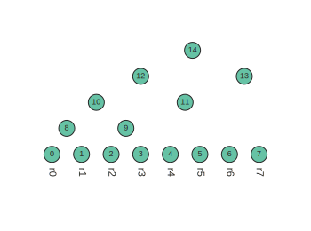
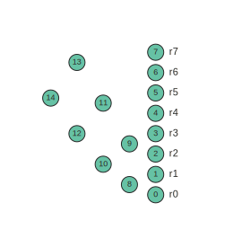
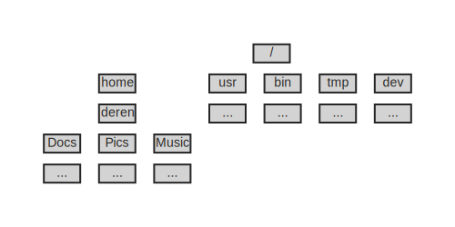

Trees as data objects¶
The Features of a Tree¶
A tree can be represented in a variety of ways. Its representation can be visual, as we have seen already in drawings/plots of trees generated with graphical tools, but trees can also be represented as a data structure -- an object for storing and retrieving information. In fact, trees are widely used throughout computer science as an efficient data structure for working with hierarchically structured data. Because the evolutionary process inherently gives rise to hierarchically structured information in the form of ancestry, trees are also widely used in biology both as a hypothesis/model, and as a data structure for studying and analyzing evolutionary data. How can we create a tree data structure, and what does that even mean? Let's walk through it.
A goal of representing a tree as a data structure is to be able to extract information from the tree. To understand this, its helpful to first think about what types of information can or must exist in a tree structureobject. Look at the tree drawing below to try to identify its core features.
Example code to create simple tree figure
# generate a random 8 tip ultrametric tree
tree = toytree.rtree.unittree(ntips=8, seed=123)
# draw facing downw with node index labels shown
tree.draw(layout='d', node_labels="idx", node_sizes=18, node_mask=False)

Basic Terminology¶
There are a number of terms that are used to refer to the parts of a tree, and this often varies depending on the field of study in which trees are being used, such as mathematics, computer science, or biology. For example, the circles in the figure above are usually referred to as nodes or vertices, and the lines connecting these are usually referred to as edges or branches. These terms for each are often used interchangeably. This terminology is also used to describe graphs, which are a similar data structure widely used in mathematics, and increasingly in biology as well.
The most fundamental features of a tree are the nodes and edges. But, you may have also identified additional information in the tree drawing, such as the lengths of edges; the labels of nodes; whether or not each node is a tip or root node (i.e., the number of edges connected to each node), and perhaps other information as well. Given that a tree composes a somewhat heterogenous collection of information, it begs the question: what is the best way to represent a tree as a data structure? In other words, how can we most conveniently access its information for the purpose of scientific analyses?
Mathematical Terminology¶
Let's start by describing a tree in mathematical terms, where it is considered a special type of graph called a directed acyclic graph (DAG). This simply means it is a graph where edges point from one vertex to another, and cannot form a closed loop (the descendant of a node cannot also be its own ancestor). This property of DAGs makes them well suited for representing hierarchical data which, by definition, has the same non-looping property. (By contrast, a cyclic graph could be used to represent a network of roads, or social connections, where loops in the graph are possible.)
In a more syntactic form, a graph (G) can be defined by a set of
vertices (V) and edges (E). We can refer to the vertices by a set
of unique labels assigned to each one, e.g., V = {A,B,C,D,E,F}.
Each edge is defined by a pair of vertices. In the case of a DAG, these
are treated as directed edges, pointing from the first to the second
vertex: E = {(A,B),(A,C),(C,D),(C,E),(C,F)}.
This is a common way in which a tree or graph might be described in a
mathematical paper. It is a statement, in this case, that six vertices
exist, and there are five edges connecting them.
The exact syntax that might be used in a paper, in terms of using
curly brackets and/or parentheses, may vary, but usually curly brackets are
used to represent sets of unique items (just like the set object type in
Python). In fact, from looking at this mathematical description you may
already have started to think of it as Python code, and this is because it
is very similar. So, let's also write the same thing in Python, here
using strings as labels for the unique vertices.
V = {"A", "B", "C", "D", "E", "F"}
E = {("A","B"), ("A","C"), ("C","D"), ("C","E"), ("C","F")}
Nodes¶
Nodes can be referred to by some type of unique label, such as a name or number. An important feature of a Node is its degree, the number of edges that connect to it. For example, in G from above, the node A has degree=2, whereas the node C has degree=4. This can easily be computed for each vertex by iterating over each item in the edges set and counting how many edges each Node is a member of.
print the degree of each vertex
for vertex in sorted(V):
degree = 0
for edge in E:
if vertex in edge:
degree += 1
print(f"vertex {vertex} has degree={degree}")
vertex A has degree=2
vertex B has degree=1
vertex C has degree=4
vertex D has degree=1
vertex E has degree=1
vertex F has degree=1
In DAGs, because the edges are directed, the edge (A,B) has a different
meaning than the edge (B,A); only one or the other can exist. Thus, we
can also refer to the in-degree and out-degree of each Node as the
number of edges pointing to or from each node, respectively.
print the directed degree of each vertex
for vertex in sorted(V):
in_degree = sum(1 for edge in E if vertex in edge[1])
out_degree = sum(1 for edge in E if vertex in edge[0])
print(f"vertex {vertex} has in_degree={in_degree}, out_degree={out_degree}")
vertex A has in_degree=0; out_degree=2
vertex B has in_degree=1; out_degree=0
vertex C has in_degree=1; out_degree=3
vertex D has in_degree=1; out_degree=0
vertex E has in_degree=1; out_degree=0
vertex F has in_degree=1; out_degree=0
This leads to a simple way of distinguishing several different types of
Nodes that are associated with different meanings in phylogenetics. For
example, Nodes that represent extant samples in a phylogenetic tree
have a special meaning. These are the actual observations. All internal nodes,
by contrast, are theoretical constructs representing inferred ancestors, and
whose properties are a consequence of the type of inference model that is
used to infer the tree. The extant samples in a tree are referred
to as tip nodes, or leaves. In terms of their degree, tip nodes
always have in_degree=1, and out_degree=0. You can see that our graph G
has four tips nodes: B, D, E and F. By contrast, internal nodes of a
tree will always have in_degree=1 and out_degree>=2. As an example,
vertex C in G is an internal node that has one ancestor and three
descendants.
A bifurcating phylogenetic tree is a tree in which every
internal node has exactly two descendants, i.e., out_degree=2. In our
example, the tree is non-bifurcating, because vertex C represents a
polytomy, containing >2 descendants. Finally, the root node is defined
by having an in_degree=0, since there is no information about its ancestor.
The degrees of Nodes in a graph constrain the types of structures that it
can represent. As an example, a node in a phylogenetic tree cannot have
an in_degree>1, meaning that a node would have more than one ancestor in
the tree. It is possible for a node to have >=2 ancestors in a
in a related data structure called a phylogenetic network, which is
mathematically similar to a phylogenetic tree, but with different constraints.
Edges¶
As we saw above, the edge set is the core information defining the relationships among vertices, including their degree. Although a vertex can vary in the number of connections it forms with other vertices (its degree), edges are simpler: they always connect just one vertex to another, no more or less. In this way, edges can be represented simply as a collection of the start and end vertices of each edge, as in the set E from above. As we will see later, however, we are often interested in storing additional information about edges, such as their length, which can be used as a weight, or confidence score, and this information is usually stored separately from the edge set.
Coding Trees¶
Different approaches to representing trees as data structures have different challenges for storing and working with information about nodes, edges, and their metadata. Below are the two most common approaches for representing trees/graphs: tables and tree structures.
Tabular data structure¶
Storing trees as a table has potential benefits over alternative approaches.
For one, a table is very memory efficient. If you have a tree with 1 million
Nodes this could be stored in the space required for storing two columns
of 1 million integers. This fact is taken advantage of in software tools
like tskit, which is used to study collections of genealogical trees
across entire genomes, which can include millions of trees of large
size. This software is particularly designed for studying genealogies that
represent linked trees, a specific problem in which many trees share
parts (nodes) that are identical. For example, this is common among
genealogies from regions of the genome that are in linkage disequilibrium.
In this context, a table can store the redundant information among linked
trees very efficiently. We will learn more about this library and its data
objects in a later chapter.
While tables can be efficient for storing and studying fixed trees, they are not very efficient when the tree structure needs to be mutable, i.e., when we plan to modify the tree at various times by adding and/or removing Nodes from the tree. Depending on where the new Nodes are placed, we would need to increment the labels of each Node to update which ones are connected to which. Similarly, if we wanted to re-root the tree, or change other attributes such as the edge lengths, many changes to the table would need to be made.
get edge table from ToyTree
tree = toytree.rtree.unittree(ntips=8, seed=123)
etable = tree.get_edges()
print(etable)

child parent
0 0 8
1 1 8
2 2 9
3 3 9
4 4 11
5 5 11
6 6 13
7 7 13
8 8 10
9 9 10
10 10 12
11 11 12
12 12 14
13 13 14
For example, say we wanted to find the names of all descendants of internal
Node 10 in the tree above. Using a table this would require multiple lookups
in the table to ask which nodes are directly descended from Node 10, and then
which are descended from those descendants. In Python, a table would likely
be stored as an array, ndarray, or DataFrame, where such lookups can be fast
in absolute terms, but would require multiple iterations over the table,
making it slow relative to some alternative approaches.
Tree Data Structure¶
A common way to store hierarchical data is to use a Tree data structure. This can be created in any object-oriented programming (OOP) language where arbitrary class objects can be created in memory, and references/pointers among these objects can be created. This approach is particularly common in languages like C, Java, and Python. Each Node in a tree can be represented by an object in memory (e.g., a Python class instance), and Edges are represented simply by references, stored as an attribute to each Node, of which other Nodes it is directly connected to.
This design has a number of advantages. First, it has only a slightly larger
memory footprint than using tables, while allowing much greater flexibility
for storing information in a way that preserves hierarchical relationships.
Second, it naturally allows for the use of traversal methods, which are
used to trace a path through the connections among Nodes, from one to the
next, in a particular order. This process, termed a tree traversal, turns
out to be a very common algorithm used throughout computer science.
Consequently, the development of tree data structures has been well studied.
For example, the file system on your computer represents a tree data
structure, where folders are nested within folders nested within folders.
We can even write the structure of folder names in newick
format to draw it as a tree, like in the example below:
Example: parse file system as a newick tree and draw
mock_file_system = "((((...)Docs,(...)Pics,(...)Music)deren)home, (...)usr,(...)bin,(...)tmp,(...)dev)/;"
tree = toytree.tree(mock_file_system)
tree.draw(
width=500,
node_sizes=20,
node_mask=False,
node_colors="lightgrey",
node_markers="r2x1",
node_style={"stroke-width": 2},
node_labels="name",
node_labels_style={"font-size": "14px"},
tip_labels=False,
layout='d',
);

File browsers and other computer programs traverse the file system
frequently, for example when looking for files of a certain name or type.
This design allows such algorithms to fetch information very quickly by
partitioning information into nested hierarchies, e.g., only looking in
locations descended from a particular location, rather than searching
the entire file system, which would be much slower.
The traversal process turns out to be highly useful for calculating statistics on hierarchical data as well, where information can often be calculated on subsets at a time without needing to load all objects at once. For example, consider the problem of calculating the size of all files on your filesystem. Writing a function to do this may at first seem daunting. But, if you think of the filesystem as a tree that can be traversed then the problem is greatly simplified. You would simply need to write a function that performs the same operation on every node (folder) of the file system. For example, working from the tips towards the root, this would be to sum the size of files in a folder, plus the sizes of any folders directly descended from it. If applied to folders in the order of a traversal that will first visit the tip nodes, then their ancestors, and so on so that it visits the root last, then this will sum to the size of all files in the system. In the next chapter we will implement traversal algorithms firsthand to better understand this process and how it can make calculating statistics on trees very simple and elegant.